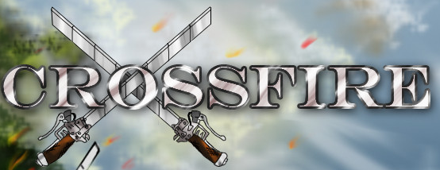
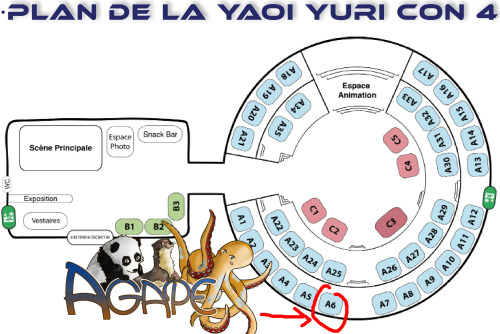
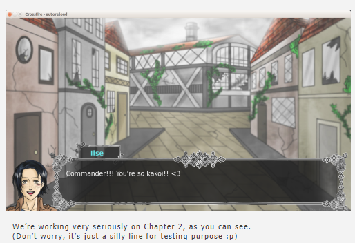

An Attack on Titan dating sim visual novel fan game, made using Python with the Ren'Py visual novel engine.

Crossfire is a video game project started by the French company Agape Studio in early 2014.
It was intended to be a free-to-play fan game set in the Attack On Titan™ fictional universe, showing alternative events that were not presented in the manga using pre-existing characters, but a completely original scenario.
I was part of the three founders, and the goal of this indie studio was to make otome games (dating simulations) in a visual novel format.
We decided to start the studio's activity by creating free-to-play games about well-known, popular franchises to help kickstart the reputation of the studio.
The visual novel format is interesting because it shares a lot with staging a play. You need to think about writing pace, action rhythm, and also an art style that fits properly with the intended story in an otherwise mostly static setup. Narration is crucial in this kind of game and even the most tiny detail is important.
To communicate about the game, we used a Twitter and a Tumblr. We also had a Lemmasoft dedicated thread for the game.
The first chapter of the game was released on the game's Tumblr and earned some interest, especially from the Attack On Titan community (a few hundreds downloads).
We even went to Yaoi Yuri Con to showcase the first chapter of the game and sell custom made goodies !

Unfortunately, the project was discontinued in early 2017 as the members of the team went their separate ways.
As the programmer of the team, my job was to implement all the necessary systems for the game :
Examples of mini-games made for this project :
In general, most of our designs, work documents and source code are private. If you would like to have a sample of what I produced for the game, feel free to reach out to me by email or any other platform and I'll try to fulfill your request.

If you would like to know more :